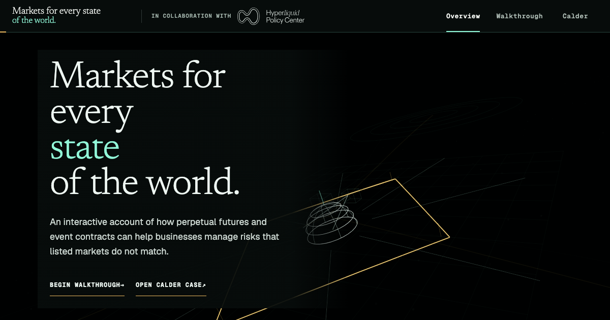
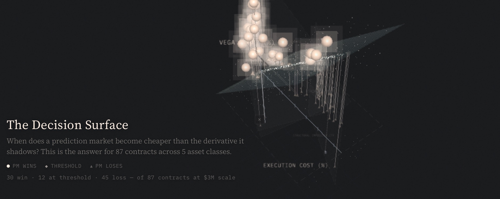
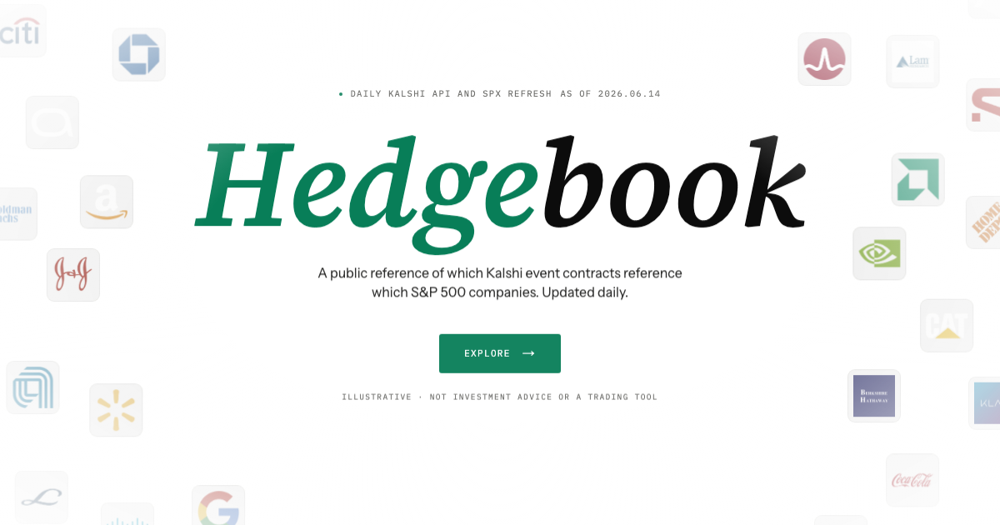
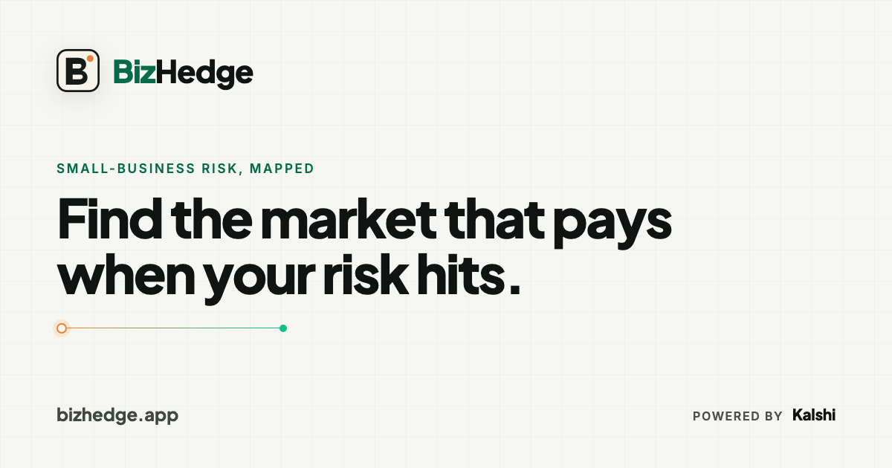
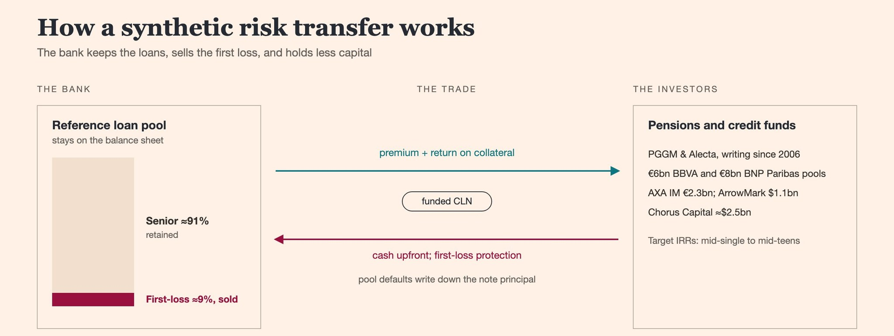
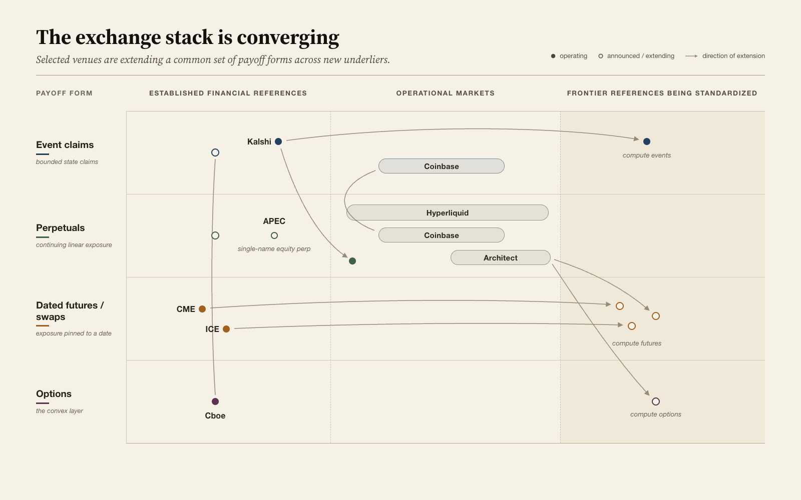
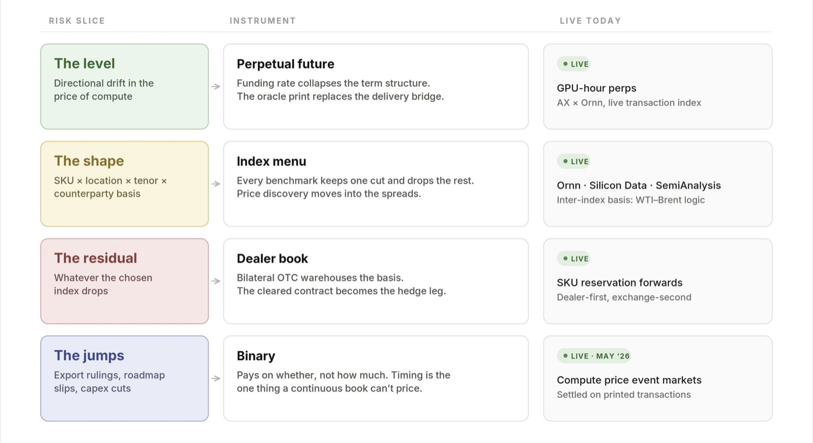
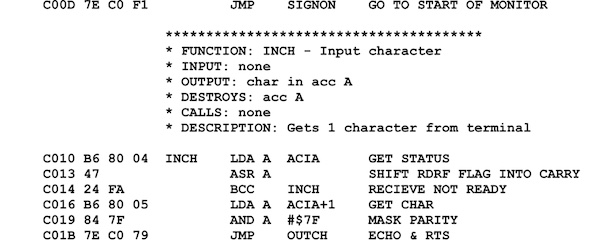

Vaal
2020–2021 · Built and soldThe European version of dv01: a plumbing engine for securitization, made with some of my best friends from the LSE.
“Draw a distinction.”
My work connects event contracts, derivatives, and corporate risk through systems design and legal structures—from exposure discovery and contract design to execution, margin, and institutional ownership.
Lately, prediction markets as an asset class. I am in the early formation of a new venture with a senior FICC co-founder, researching origination and swaps.
International Philosophy Olympiad laureate in high school, then a first and a distinction at the London School of Economics. Internships at leading law firms followed.
My academic research at the LSE centered on systemic risk: pathological contagion models, Arrow–Debreu securities, and permutations of those securities structured around swaps. A separate strand examined the economic efficiency of the ISDA Master Agreement / CSA structure.
I like thinking about systems and how to best formalize them from a market-structure perspective. How they form, why they fail, what emerges from the wreckage. Mostly I am trying to understand information failure: who knows what, who cannot know what, and what happens in the gap.
Record
The European version of dv01: a plumbing engine for securitization, made with some of my best friends from the LSE.
Founded and ran Insrt Labs for 39 months. Five audited products explored three versions of the same microstructure problem: fractional ownership and yield, just-in-time inventory, and routing new demand into long-tail spot markets. Wound down December 2025.
$3.5m raised · five audited products · ≈$20m gross spend · protocol fees exceeded capital raised
Gamified leverage trading app. Partners included the Solana Foundation and Raydium Foundation.
Fractional ownership over onchain intellectual property.
Independent research and advisory work across market design, secondary-allocation transactions, major exchanges, and policy centers.
IDefine the space
Markets for every state of the world.
An interactive policy publication developed in collaboration with the Hyperliquid Policy Center. It shows how real businesses could use perpetuals and event contracts against risks that ordinary listed markets do not match. The cases and figures are synthetic.

An order book organizes liquidity by contract. A statebook organizes executable liquidity by terminal payoff. The paper asks what must be true before that relationship becomes tradable: common state definitions, explicit payoffs, firm routes, and risk treatment that survives settlement and default.
IIPrice the route
Seeing Like a Market.
An empirical and theoretical programme on the cost of acquiring state exposure: directly through an event contract, or indirectly through the derivative that shadows it. The programme began with the original Seeing Like a Market manuscript—90 pages, 87 contracts across five asset classes—and now extends beyond it.

IIIMap the exposures
Corporate exposure, matched to live contracts.
A daily-updated public reference connecting Kalshi event contracts to the S&P 500 companies they reference. The current edition contains 500 company dossiers, 47 market pages, and roughly 2,500 issuer–market links, with traditional-market analogues alongside them.

IVAct inside it
One business, one exposure, one defensible hedge.
Describe what could hurt the business in ordinary language. BizHedge searches current Kalshi markets, identifies the strongest legitimate relationship, and makes the cost, payout, and remaining risk legible. If no market genuinely fits, it says so.

Essays and working notes on event risk, corporate hedging, and exchange design. The conversation happens on X; the durable versions are archived here.
X Article · 14 Jul 2026
A contract can be bought. A hedge has to be constructed around an exposure.

03 The exchange stack is converging Venue labels increasingly describe the front door, not the payoff stack.
04 Compute, sliced four ways The level, the shape, the residual, and the jumps—and the instrument each one gets.
05 Philosophical Precision Is the New Assembly Precise conceptual vocabulary as a control language for agentic reasoning.
A partial map of the ideas underneath the work. A selected shelf; the rest on request below.
The map is not the territory and how a map can kill millions.
Civilizational history at its best.
We all satisfice to our computational and emotional limits.
The most beautiful poetry ever written.
Patience as strategy. The revenge plot as mechanism design problem.
The topography of the history of thought.
The only thing that still annoys me is that the Terminus is the Manifold.
Beautiful, rigorous, and wrong in exactly the ways that matter.
Cosmos versus Taxis. Spontaneous order versus constructed order. The source code for everything I work on.
The biological precursor to Kantian epistemology.
Sovereignty. Friend/Foe. Which is which?
Above all, don't fool yourself, don't say it was a dream, your ears deceived you.
How institutions actually form. The state, rule of law, accountability and why most places fail to get all three.
How Lucretius got rediscovered and changed everything. Ideas have material histories.
The calculus of distinction. The mark at the top of this page comes from it.
Whoever rules must have that iron in him. This is not a game of cards. This is your life and mine.
Monetary history from the people who made it. Central banking as craft, not science.
War as it actually is. The corrective to every abstraction about conflict.
Friction, fog, the continuation of politics by other means. Strategy as dealing with uncertainty, not eliminating it.
We live in a hyperreality and it is only getting more strange. A prophetic monograph.
Signal
Research is archived here. The live work appears first on X.